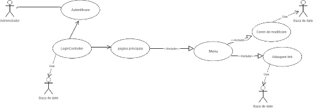

Autonomus este o aplicatie de tip web care agrega evenimente pe care le clasifica dupa anumite taguri. Aplicatia isi propune sa simplifice procesul prin care utilizatorul poate descoperi diferite evenimente care se intampla pe subiectele lui de interes.
In cadrul aplicatiei noastre, ne propunem sa oferim utilizatorului sansa de a vizualiza
evenimente care corespund subiectelor lui de interes, pe care le poate selecta, sa vizuallizeze
diverse detalii si chiar trimite sugestii de modificari in cazul unor anumitor erori in cadrul
evenimentelor originale agregate. De asemenea, ei pot aprecia anumite evenimente si le pot
ulterior exporta in format iCalendar pentru importul intr-o alta aplicatie de management
a agendei zilnice. Acesta va fi si notificat prin SMS la aparitia unor evenimente noi, dar
va fi tinut la curent si cu ajutor unor newslettere.

Din perspectiva administratorului, el poate adauga diverse pagini de profil, precum
cele de pe Meetup, Eventbrite, Fb, care vor fi urmarite si din care se vor extrage
evenimente. De asemenea, el are dreptul de a aproba sau respinge cererile de modificare
transmise de utilizatori.

Pentru a realiza acest proiect, am realizat in prima faza diagramele de use-case si am
Bla bla